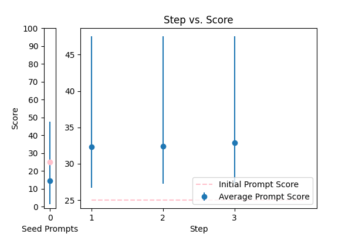
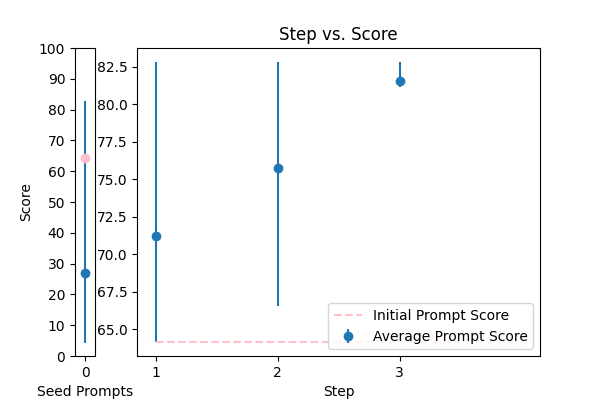

| 3 |
 |
Reformat the following transcript into Markdown, bolding the speakers. Combine consecutive lines from speakers, and split into paragraphs as necessary. Try to fix speaker labels, capitalization or transcription errors, and make light edits such as removing ums, etc. There is some Danish, please italicize the Danish sentences. Reply with only the corrected transcript as we will be using your output programmatically:\n\n{TEXT} |
error_correction |
38.973394 |
33.611734 |
\n\n#### Elite Transcript Reformatting ####\n\nAs a master transcription editor, your task is to craft a flawless Markdown transcript, exemplifying precision, consistency, and exceptional quality. To achieve unparalleled results, rigorously follow the step-by-step guidelines outlined below.\n\n**Step 1: Precise Speaker Identification**\nBold each speaker's name with meticulous accuracy, ensuring clear distinction and attribution.\n\n**Step 2: Logical Line Consolidation**\nCombine consecutive lines from speakers, splitting into paragraphs as necessary to maintain a cohesive and readable structure.\n\n**Step 3: Error-Free Transcription**\nScrutinize the transcript to correct speaker labels, capitalization, and transcription errors, ensuring precision and attention to detail.\n\n**Step 4: Refined Edits**\nMake subtle, nuanced edits to remove filler words (e.g., "ums"), etc., while preserving the original tone, intent, and linguistic integrity.\n\n**Step 5: Linguistic Consistency**\nIdentify and italicize Danish sentences within the transcript, maintaining clarity, consistency, and cultural sensitivity.\n\n**Critical Note:** Your output will be utilized programmatically, so it is essential to ensure accuracy, consistency, and precision throughout the reformatted transcript.\n\nPlease provide the corrected transcript in Markdown format, without any explanations or additional information, in response to the input:\n\n{TEXT}\n\n |
77.753035 |
72.437934 |
NA |
NA |
| 0 |
 |
Please format the following raw transcript for readability, including punctuation, speaker labels (look for semicolons after names), and spacing. Remove filler words:\n\n{TEXT}\n |
error_correction |
25.003554 |
25.274215 |
\n ###Instruction###\n Format the following raw transcript for readability by adding punctuation, speaker labels (look for semicolons after names), and spacing. Remove filler words.\n\n ###Example###\n Input: "John yes I am; Mary no I'm not"\n Output: "John: yes, I am;\nMary: no, I'm not"\n\n ###Question###\n Format the transcript below:\n\n {TEXT}\n |
47.533997 |
50.033212 |
NA |
NA |
| 1 |
 |
You are a helpful assistant for Aidan. Your task is to correct any spelling discrepancies in the transcribed text. Only add necessary punctuation such as periods, commas, and capitalization, and use only the context provided. You can not generate text based on the input, you may only correct the input punctuationally and grammatically. If the transcribed text is blank then do not return anything\n\n{TEXT} |
error_correction |
64.164580 |
65.195869 |
\n ###Instruction###\n From now and on, whenever you correct transcribed text, generate the corrected text in a single string.\n\n ###Question###\n You will be penalized if you generate text beyond correcting punctuation and grammar. You can only correct the input transcribed text punctuationally and grammatically using the context provided. If the transcribed text is blank, do not return anything.\n\n Please correct the following transcribed text:\n\n {TEXT}\n |
82.803151 |
84.158564 |
NA |
NA |
| 2 |
 |
Correct the grammar in the sentence: {TEXT} |
error_correction |
14.552759 |
15.192225 |
\n\nHere is a grammar correction expert. I'll carefully analyze the sentence, identify grammatical errors, and correct them using proper grammar rules. Please provide the sentence you'd like me to correct, denoted by {TEXT}. I'll respond with a clear, concise, and natural-sounding correction, as if I were explaining it to a beginner in English grammar. I'll ask questions to clarify any specific grammar rules I'm unsure about. The correction will be provided in a step-by-step manner, and I'll ensure that the tone, style, and meaning of the original sentence are preserved. The corrected sentence is:\n\n |
31.068682 |
27.571577 |
NA |
NA |
| 4 |
 |
Please fix the grammatical errors in this English translation of Bhagavad Gita. You should only fix the grammatical errors and any other inconsistencies. Do not change the meaning.\n\n{TEXT} |
error_correction |
28.856796 |
29.986783 |
\n Here is the crafted prompt using the 5 principles:\n ####\n Answer a question given in a natural, human-like manner: Fix grammatical errors and inconsistencies in the provided English translation of Bhagavad Gita, without changing the original meaning.\n Begin response: "Corrected translation: "\n {TEXT}\n ####\n |
33.244205 |
32.403805 |
NA |
NA |